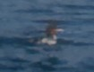
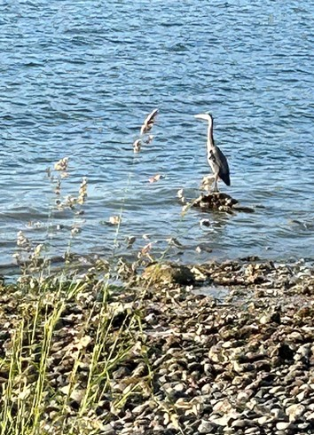
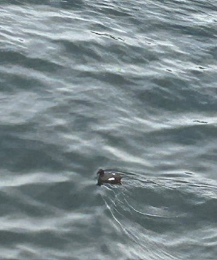
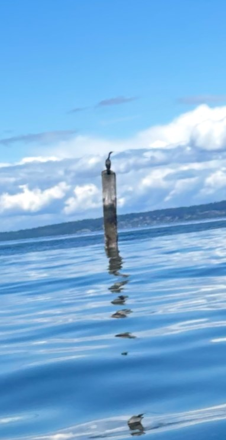
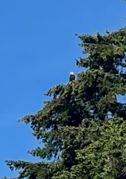
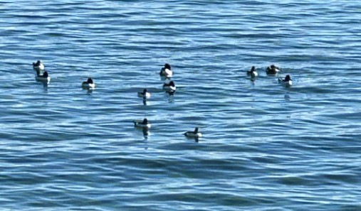

Common Merganser
Mergus merganser
Diving duck
Fish-eater
Winter visitor

Quick facts
ID keysLong, narrow red bill; clean, sleek profile; often rides low on the water.
Male vs femaleMales bright white with dark green head; females gray with rusty head/crest.
HabitatBays, inlets, and protected saltwater; also large lakes and rivers.
BehaviorEfficient diver—often pops up far from where it went under.
Mariners-eye momentWhen they start “submarine hunting,” it’s like watching a tiny torpedo patrol.
Great Blue Heron
Ardea herodias
Wader
Shoreline hunter
Year-round resident

Quick facts
ID keysTall gray-blue heron, dagger bill, slow deliberate stalk.
SizeAbout 4 ft tall; wingspan often over 6 ft.
HabitatShorelines, tidal flats, docks, marinas, quiet coves.
FeedingAmbush predator—stands statue-still, then strikes like a spear.
Flight IDFlies with neck tucked back (“S” shape) and slow wingbeats.
Black Guillemot
Cepphus grylle
Seabird
Diver
Coastal

Quick facts
ID keysDark body with bright white wing patches (seasonal variation); red legs/feet.
HabitatNearshore waters, rocky coasts, protected marine areas.
BehaviorDives for fish and invertebrates; often close to shore.
VibeOne of those “wait—what is THAT?” birds that feels like a rare DLC unlock.
TipLook for quick, low flights over water between dives.
Pelagic Cormorant
Urile pelagicus
Seabird
Cliff & rock perch
Underwater hunter

Quick facts
ID keysSlender cormorant with long neck; often looks “sleeker” than double-crested.
HabitatRocky shorelines, islands, offshore rocks; coastal Puget Sound fits.
BehaviorDives and swims underwater for fish; often perches to dry wings.
SilhouetteClassic cormorant posture: upright with a slight “cobra” neck curve.
TellIf it’s on a rock looking smug and aerodynamic, you’re probably close.
Bald Eagle
Haliaeetus leucocephalus
Raptor
Apex shoreline
Year-round resident

Quick facts
ID keysAdult: white head and tail; massive yellow bill; huge wings.
HabitatNear water with tall trees for perching and nesting.
BehaviorSoars, perches, and opportunistically hunts fish and waterfowl.
SoundHigh, chattery calls (not the Hollywood hawk scream).
MomentEverything else goes quiet when one cruises overhead.
Bufflehead
Bucephala albeola
Small diving duck
Winter visitor
Fast & buoyant

Quick facts
ID keysMale: bold white head patch on dark head; compact “bobble” profile.
HabitatProtected bays and coves; often close to shore.
BehaviorQuick dives for insects/crustaceans; pops up like a cork.
MovementOften in small groups; very “zip and dive” energy.
Spotting tipWatch for synchronized dips—like tiny periscopes disappearing.